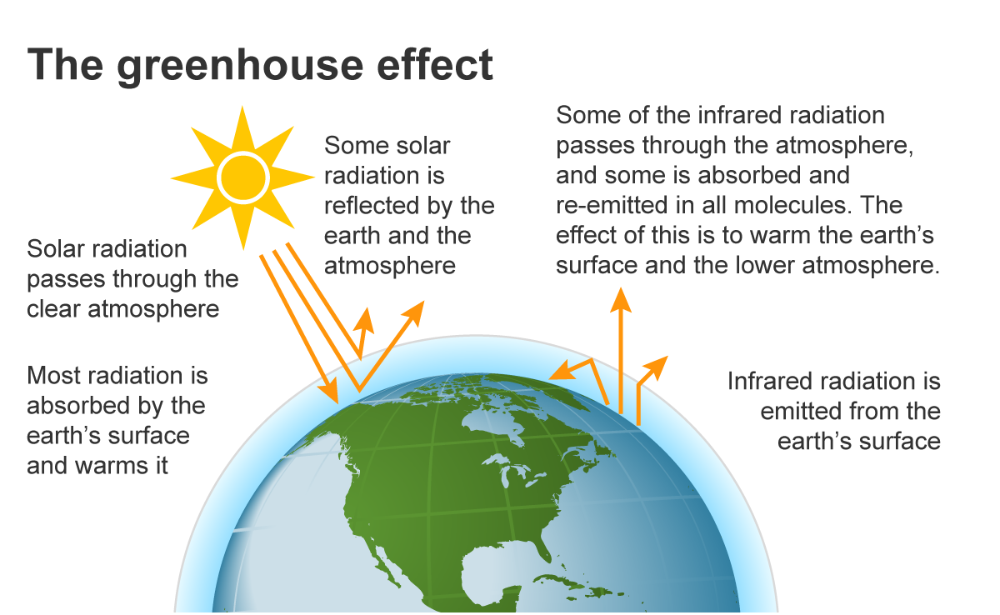

blabla spiegare perche i gas serra sono cattivi TODO
Agricolture (which includes farming) may sound like a green activity, with little to no emissions since it is so intertwined with the nature. Actually, it is the 4th sector in terms of total GHG emissions, and by far the first when considering Methane (TODO add formula) and Nitrous Oxide (TODO formula). These two gases, despite not having the infamous reputation of CO2, can be much more longeve and heat-retaining in the atmosphere.
Agricolture can be a big sector to analyze as a whole: in order to understand what can be done, let's analyze the estimated quantity of GHG emitted by type of product. Bovines and ruminants in general have in general the biggest GHG emissions by far!
Ruminants have a very very "inefficent" digestive apparatus, in terms of converting food in energy. This means: - Larger fields dedicated to pasture for extensive farms, or dedicated to forage in intensive farms. - A lot of methane as a product of digestion, TODO da rutti e cacca
But wait! I can hear you say: beef is very proteic and caloric, so just one cow can feed many people! While that is (partially) true, the ratio between final product and land used or GHG emitted is still much worse when compared to other animals.
Actually, no one. Even with small differences, the percentage of NH4 and N2O from agricolture is very high in all EU countries.
Taking a look a this percentage of some of the most emitting countries thoughout the years, we can see that it is not decreasing.
How can we change this problematic situation? The best thing we can do individually is to change our diet and consume less meat. This will certainly be more healthy, and (hopefully) bring the market towards a terraing allocation recalibration. But there is no need to go full vegan! As we have seen above, there are many animal-based beef alternatives with just a fraction of impact on nature. Considering a global diet without chicken, fish, diary (and more) we can see a "diminishing return" effect: we completely alter our diet (unlikely to happen) without such a big benefit in terms of emissions.